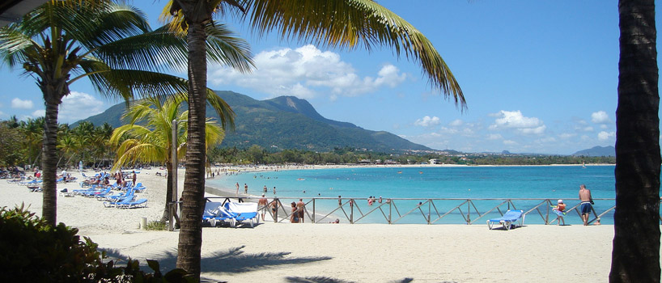

By PAOLA GARCIA | November 13, 2021
There is a lot of really cool stuff to do in my hometown of Puerto Plata. The best thing about this is that a lot of it can be done rather inexpensively or even free. Here is my bucket list of ten budget-friendly things to do in Puerto Plata. This frugal list includes a wide variety of activities and has something for every age group to enjoy.
Amber Museum
 The Amber Museum of Puerto Plata is housed in a cool Victorian style home located in the center of town.
The Amber Museum of Puerto Plata is housed in a cool Victorian style home located in the center of town.
The museum has several floors that showcase numerous exhibits. These include beautiful Dominican amber stones containing animal fossils, flowers, butterflies and other insects. Some exhibits feature several pieces of handcrafted art carved out of amber stone such as sculptures and a chessboard with pieces. There is also a life-sized lizard to pose with and a room designed like a cave. This cave room contains several artifacts that date back fifteen to twenty million years ago.
The museum also features a section where you can make your very own hand crafted cigar. The cost of admission is around $2.00.
61 Duarte St. • Puerto Plata, 57000 • tel: 1 809-320-4262 •
info@ambermuseum.com
WEBSITE: ambermuseum.com
Brugal Rum Distillery
 Brugal Rum has been an established institution in Puerto Plata since 1888. Their rums are recognized as some of the finest in the world.
Brugal Rum has been an established institution in Puerto Plata since 1888. Their rums are recognized as some of the finest in the world.
Tour the distillery, learn the history of this immensely popular brand and of course, taste some rum.
The cost of the tour is around $3.00.
Av Manolo T. Justo • Puerto Plata, 57000 • tel: 1 809-261-1888
WEBSITE: brugal-rum.com
Cosita Rica Beach
 Cosita Rica Beach is one of the best places in Puerto Plata to do beach activities and hang out with family and friends or just yourself at no cost.
Enjoy the soothing breeze off the ocean. Swim, surf, sunbathe, picnic, play games, read a book, take pictures, listen to your music, take a nap in a hammock or a beach lounge chair. Whatever you do, just have fun!
Cosita Rica Beach is also located near several bars, cafés, and restaurants.
Fort San Felipe
Fort San Felipe is an iconic piece of the history of the Dominican Republic. It was built in 1577 to fend off Caribbean Pirates.
The fort turned history museum features its original cannons, several pieces of ancient military artifacts such as guns, bayonets, and cannonballs. Other features include historical photos, hidden chambers, a lighthouse, and an audio tour. As a bonus, you get to see a spectacular view of Puerto Plata's coastline from atop the fort.
The cost of admission is around $6.00.
Puerto Plata, 57000 • 1 809-261-1911
Fun City Action Park
Fun City Action Park is a place where even grown-ups can be kids again. Take one of their go-karts for a spin around the track. Fun City also has a kid's playground and a refreshment stand.
The cost of admission is around $6.00.
Puerto Plata 5 • Puerto Plata, 57000 • 1 809-320-1031
General Gregorio Luperón House
The General Gregorio Luperón House is a national monument and museum dedicated to the life of General Luperón, the Dominican Republic's most prominent national hero. It is one of the most visited landmarks in the entire Dominican Republic.
The museum is an eight-room, two-story, Victorian-style home. It is full of exhibits that feature pictures, life-sized images, clothing, furniture and other timepieces from General Luperón's amazing life.
The cost of admission is around $4.00 for adults and $2.00 for children.
12 de Julio St., 54 • Puerto Plata, 57000
1 809-261-8661
museogregorioluperon@claro.net.do
Independence Square
Independence Square is the centerpiece of Puerto Plata's historical epicenter. It acts as a tribute to Puerto Plata's Victorian architecture and history.
Independence Square is surrounded by colorful pastel buildings that use the same style of Victorian architecture. Located in it's center is the famous Victorian Times. Nearby is the historic Catedral San Felipe, and the Paso Melosa. It also serves as the town's big cultural gathering place. Festivals and free concerts are quite regularly held here or in the plaza right next to it.
Mount Isabel de Torres
Something that you must do while in Puerto Plata is to take a journey up to our crown jewel, Mount Isabel de Torres!
Ride the cable car up to its 2,600 feet high peak or you can hike. View some breathtaking scenes on your way up and at the top. Pose with our famous Christ The Redeemer statue. View the mountain's lushes botanical plant life. Wander the mountain's many trails and explore its caves. There is also a restaurant and a souvenir shop up top.
The cost of the cable ride is around $7.00.
Puerto Plata, 57000 • 1 809-970-0501
POP Cinemas
 POP Cinemas is our local movie theatre. Conveniently located inside the Playa Dorada Mall, POP shows the most highly anticipated first-run movies from the USA. Their ticket prices and the refreshments they serve are relatively inexpensive. For about the equivalent of $5.00, I've been able to see all the Avengers, Spider-Man, Star Wars, and a lot of other great movies when they were first released.
POP Cinemas is our local movie theatre. Conveniently located inside the Playa Dorada Mall, POP shows the most highly anticipated first-run movies from the USA. Their ticket prices and the refreshments they serve are relatively inexpensive. For about the equivalent of $5.00, I've been able to see all the Avengers, Spider-Man, Star Wars, and a lot of other great movies when they were first released.
Calle Principal Playa Dorada 538 • Puerto Plata, 57000 • 1 809-320-1400
WEBSITE: POP Cinemas
Umbrella Street
Umbrella Street is Puerto Plata's latest tourist attraction. It's named so because the street is covered in rainbow-colored umbrellas. Pose with the street's Angel Wings. Check out Umbrella Street's restaurants, cafés, and gift shops. This is a nice place to take photos, hang out, and have a good time.
* Please note that the prices listed in this article are the most current as of this writing but are subject to change.
Until next time. Besos!